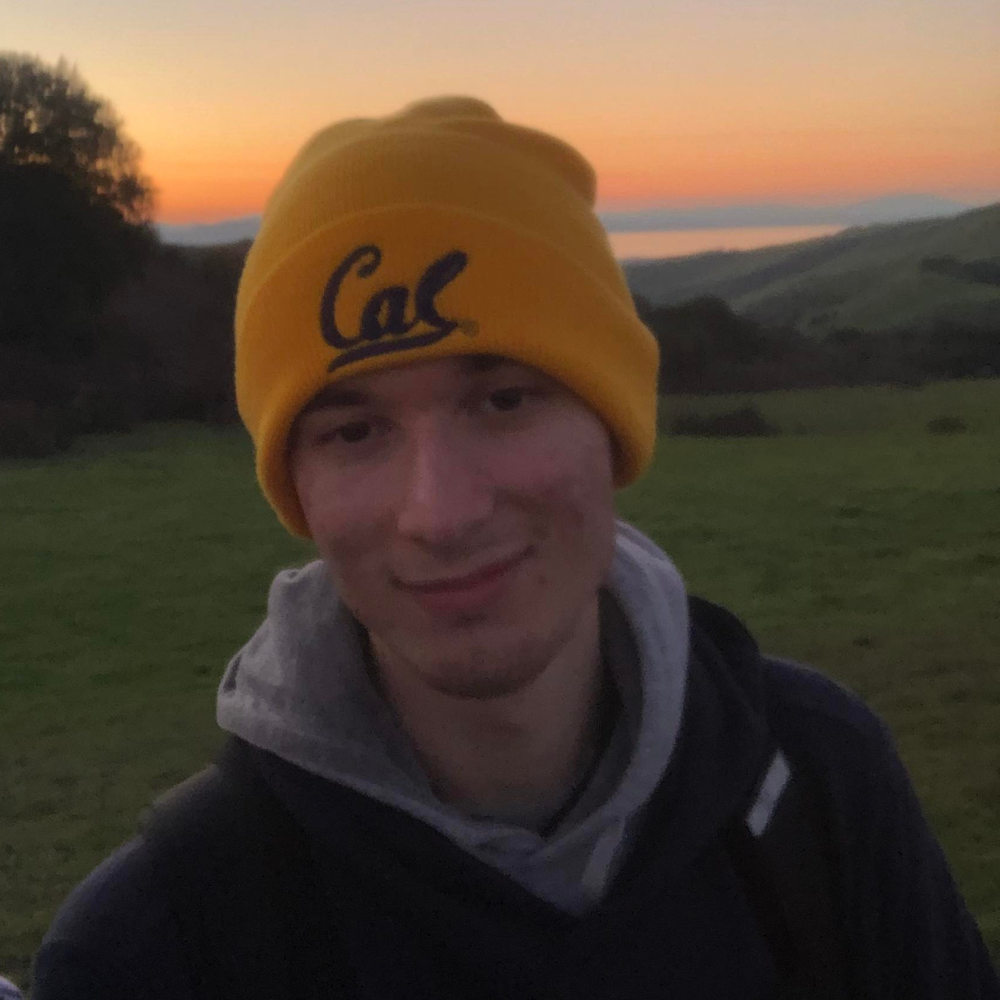
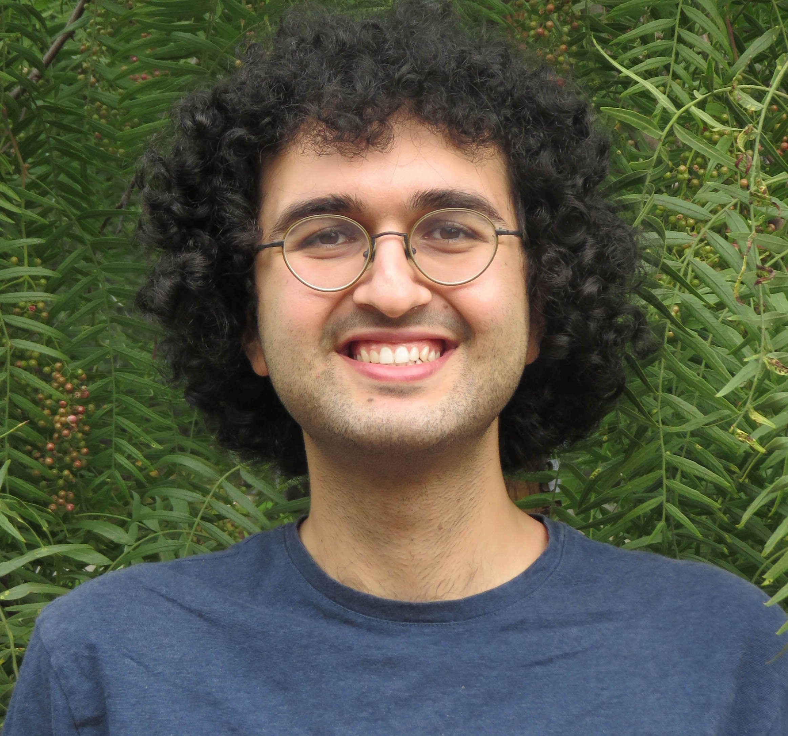

Instructor
Adam Lucas
alucas AT berkeley DOT edu
Adam did his BS in Chemistry at McGill University and his Ph.D in Mathematics (representation theory) at MIT. He was a NIH research fellow at UCSF in the area at protein folding and is a continuing lecturer in the Statistics department since 2015. Adam enjoys freestyle windsurfing.
OH:
- MWF 11 AM - 12 PM @ SLC
Zoom:
GSIs

Saptarshi Chakraborty
saptarshic AT berkeley DOT edu
I'm Saptarshi Chakraborty (সপ্তর্ষি চক্রবর্তী), a second-year PhD student in Statistics at the Department of Statistics, University of California, Berkeley. Prior to joining Berkeley, I completed my Master's (M.Stat) and Bachelor's (B. Stat (Hons.)) degrees in Statistics from Indian Statistical Institute, Kolkata, India. Previously, I was a visiting scholar at the Department of Statistical Science, Duke University, NC, USA. I was also a summer exchange student at the Big Data Summer Institute, University of Michigan, USA in 2018, where I worked on the application of Machine Learning algorithms on medical data.
Sections:
- MW 2-3 pm @ Evans 3 (Section 108)
- MW 3-4 pm @ 332 Evans 9 (Section 109)
- Zoom 970 6561 6690
OH:
TBD
Yang Chu
yang DOT chu AT berkeley DOT edu
Hi everyone,
I'm a second year PhD student in the statistics department. I'm interested in probability theory. I'm from China. I completed my undergraduate study at Stony Brook. It's the first time I teach this course, and I'm looking forward to seeing you on campus.
Sections:
- MW 4-5 pm @ Evans 332 (Section 103)
- MW 5-6 pm @ Evans 332 (Section 104)
- Zoom 927 4359 2012
OH:
TBD
Dohyeong Ki
Dohyeong_Ki AT berkeley DOT edu
Dohyeong is a second-year Ph.D. student in the Department of Statistics.
Sections:
- MW 1-2 pm @ Wheeler 130(Section 105)
- MW 2-3 pm @ Evans 9 (Section 107)
- Zoom 937 7145 7718
OH:
TBD
Hyunsuk Kim
hyskim7 AT berkeley DOT edu
I am a first-year Statistics student. I spent my undergraduate years in Seoul National University, where I double majored in Statistics and Mathematics. I like to watch baseball and basketball games, and I also like to play any sports too. I look forward to meeting you all in person!
Sections:
- MW 1-2 pm @ Evans 332 (Section 101)
- MW 2-3 pm @ Evans 332 (Section 102)
- Zoom 996 7595 9150
OH:
TuTh 3-5pm

Nicholas Liskij
nliskij AT berkeley DOT edu
I'm a first year PhD student in the statistics depatment. Previously, I completed a BS and an MA in math at UCLA. In my free time, I enjoy hiking.
Sections:
- MW 1-2pm @ Wheeler 202 (Section 106)
- MW 4-5pm @ Evans 9 (Section 112)
- Zoom 970 4933 3430
OH:
TBD

Daniel Raban
danielraban AT berkeley DOT edu
Daniel did his BA in Mathematics at UC Berkeley and his MA in Mathematics at UCLA. He studies Probability Theory here in the Statistics department. Daniel enjoys writing fiction and analyzing video game music.
Sections:
- MW 3-4 pm @ Hearst Gym 242 (Section 110)
- MW 4-5 pm @ Wheeler 220 (Section 111)
- Zoom 944 2703 0621
OH:
TBD